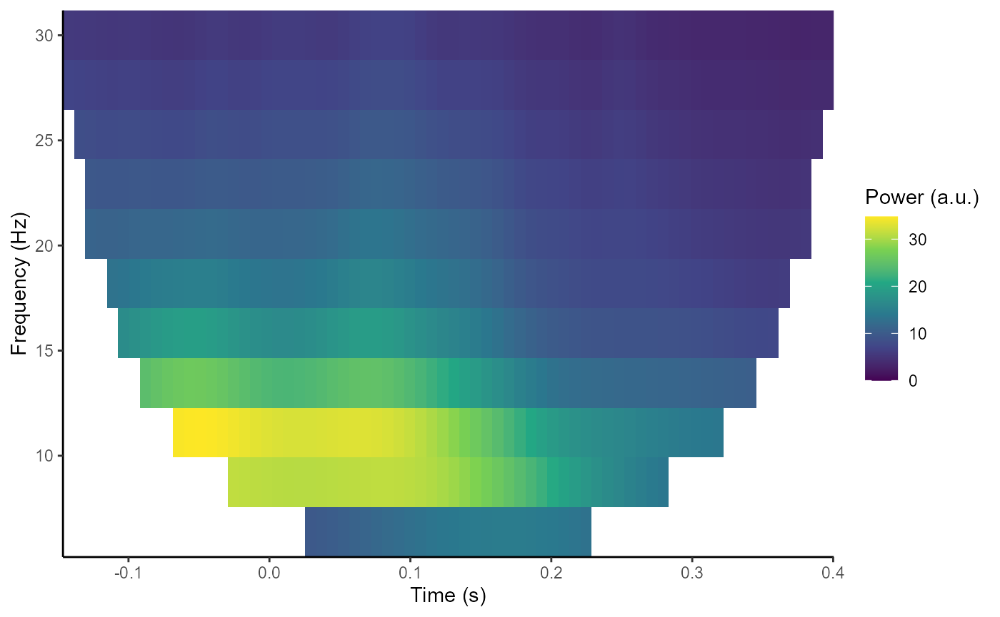

Frequency analysis
Matt Craddock
2022-02-07
Source:vignettes/time-frequency-analysis.Rmd
time-frequency-analysis.RmdPeriodicity is commonly observed in EEG signals. For example, oscillations in the alpha frequency range (approximately 8-13 Hz) were one of the first signals observed in the human EEG. One method of analysing this periodicity is to calculate the Power Spectral Density using a method such as Welch’s FFT.
Frequency analysis
In eegUtils, this can be achieved using compute_psd() and plot_psd(). With epoched data, compute_psd() calculates the PSD for each trial separately. compute_psd() returns a data.frame with spectral power at each resolved frequency and for each electrode. Note that plot_psd() can be called directly on eeg_data or eeg_epochs objects without first having to compute_psd(). With epoched data, it will compute the PSD for each epoch and then average over epochs before plotting.
library(eegUtils)
#>
#> Attaching package: 'eegUtils'
#> The following object is masked from 'package:stats':
#>
#> filter
demo_psd <- compute_psd(demo_epochs)
#> Removing channel means per epoch...
#> Computing Power Spectral Density using Welch's method.
#> FFT length: 256
#> Segment length: 84
#> Overlapping points: 42 (50% overlap)
plot_psd(demo_epochs)
#> Removing channel means per epoch...
#> Computing Power Spectral Density using Welch's method.
#> FFT length: 256
#> Segment length: 84
#> Overlapping points: 42 (50% overlap)
Time-frequency analysis
Frequency analysis necessarily discards temporal information. One problem is that it assumes stationarity - that the signal remains stable in terms of frequency and power across the whole analysed time window. However, this is rarely the case with EEG data, which exhibits dynamics across a wide range of timescales.
Time-frequency analysis is a method of accounting for non-stationarity by decomposing the signal using a moving-window analysis, tiling the time-frequency space to resolve power over relatively shorter time-windows.
In eegUtils, compute_tfr() can be used to calculate a time-frequency representation of eeg_epochs(). Currently, this is achieved using Morlet wavelets. Morlet wavelets are used to window the signal, controlling spectral leakage and time-frequency specificity. Morlet wavelets have a user-defined temporal extent, which in turn determines the frequency extent. We define the temporal extent of our wavelets by cycles; we define it as an integer number of cycles at each frequency of interest.
demo_tfr <- compute_tfr(demo_epochs,
method = "morlet",
foi = c(4, 30),
n_freq = 12,
n_cycles = 3)
#> Computing TFR using Morlet wavelet convolution
#> Output frequencies using linear spacing: 4 6.36 8.73 11.09 13.45 15.82 18.18 20.55 22.91 25.27 27.64 30
#> Removing channel means per epoch...
#> Returning signal averaged over all trials.
demo_tfr
#> Epoched EEG TFR data
#>
#> Frequency range : 4 6.36 8.73 11.09 13.45 15.82 18.18 20.55 22.91 25.27 27.64 30
#> Number of channels : 11
#> Electrode names : A5 A13 A21 A29 A31 B5 B6 B8 B16 B18 B26
#> Number of epochs : 80
#> Epoch limits : -0.197 - 0.451 seconds
#> Sampling rate : 128 HzNote that the characteristics of the wavelets, in terms of temporal and frequency standard deviations, are stored inside the eeg_tfr object:
demo_tfr$freq_info$morlet_resolution
#> frequency sigma_f sigma_t n_cycles
#> 1 4.000000 1.333333 0.11936621 3
#> 2 6.363636 2.121212 0.07503019 3
#> 3 8.727273 2.909091 0.05470951 3
#> 4 11.090909 3.696970 0.04305011 3
#> 5 13.454545 4.484848 0.03548725 3
#> 6 15.818182 5.272727 0.03018456 3
#> 7 18.181818 6.060606 0.02626057 3
#> 8 20.545455 6.848485 0.02323944 3
#> 9 22.909091 7.636364 0.02084172 3
#> 10 25.272727 8.424242 0.01889249 3
#> 11 27.636364 9.212121 0.01727669 3
#> 12 30.000000 10.000000 0.01591549 3The results of the time-frequency transformation can be plotted using the plot_tfr() function.
plot_tfr(demo_tfr)
Baseline correction is common in the literature, which can serve two purposes. Several different methods are possible. both for plotting only, and as a modification to the eeg_tfr object using rm_baseline().